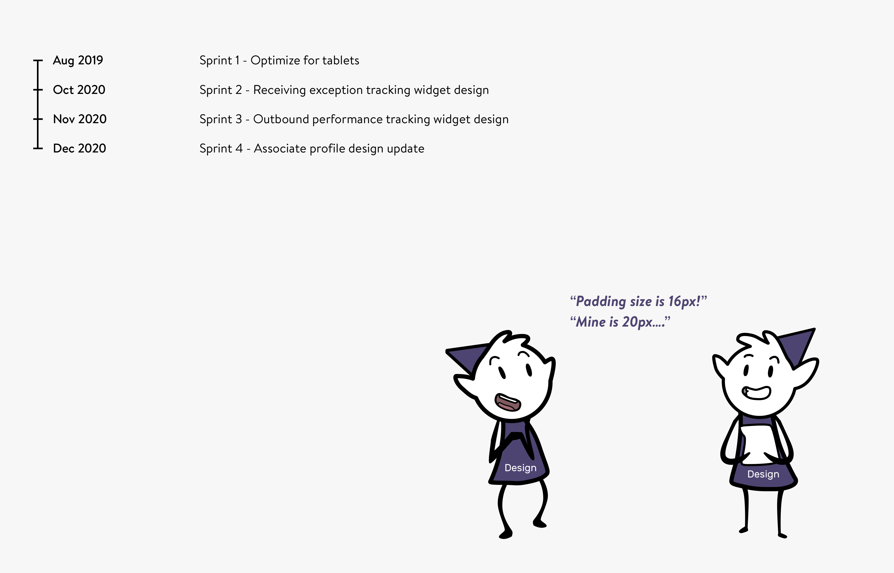
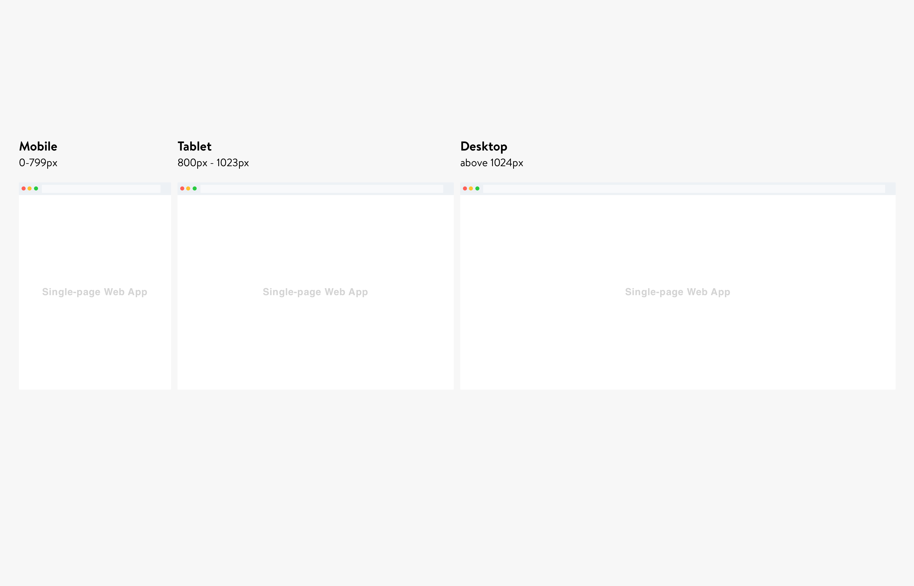
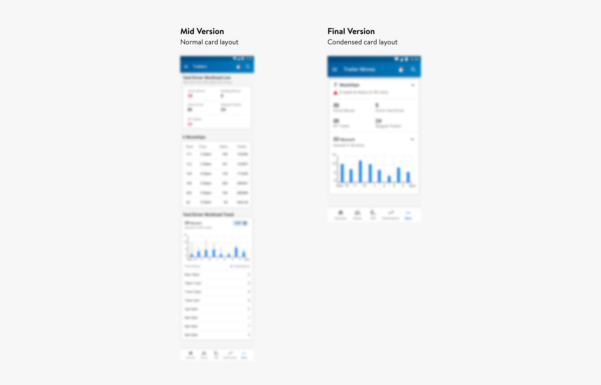

Pulse
Support a data vis product growth in mobile, tablet and desktop (NDA)
About
Pulse is a live data vis dashboard app I worked on at Walmart. It had been developed for more than two years and piloted in more than 40 Walmart RDCs when i joined. It provides performance related data of associates to managers to aid decision making process.

My role
I colloborated with another designer, working on different features. We also work with dev team following Scrum process. We meet the product manager every week, and meet with developers biweeky. I lead the tablet optimization design, outbound performance tracking design (mobile and destop), receiving exception tracking design (mobile and desktop) and provide daily design support .

Restricted by Non-disclosure Agreement, I am not able to display details.
If you are interested to learn more about this project, please send me a message
through LinkedIn: @Yingxiao Ouyang or Email: @lunaatlgt@gmail.com.
Design Intake
Define the breakpoint
One of the biggest challenge we have is to define the three views: mobile, tablet and desktop. The distribution center has three types of tablets, only one is widely used: Samsung Active Tab 2 (602px * 938px). Another two tablets are 800px * 1200px. After testing the result, we decided to use 800px as the breakpoint for tablet, 1024px for desktop.
Design the tablet view
When optimizing the design for tablet, one of the changes I made is to fix the most important performance card on top. This helps users to focus on the most important content first before digging into details. This layout also reduces the frictions caused by different card sizes when users glace through the page.

Optimize designs for mobile view
One of the biggest challenge I had was to optimize complicated process on desktop for mobile. As desktop is the primary devices, there are 10% traffic come from mobile devices. As we need to design in a timely manner, I first design in desktop to discuss flows with the product manager. After we figured out how the flows may impact the business, I start to finalize the desktop and optimize it for mobile.
In the exception tracking project, I changed the master/child table design in desktop to two pages in mobile, one for master table, another one for child table. This helps the users to focus on one task one page. Since the item id is a 16-digit figures, we truncated the data to only the last 4 digts. This trucated number makes the content more digestable, but doesn't hinder users from recorgnizing the label in physcial world.

In the outbound tracking project, in order to prevent users from long scroll, I customized the view in mobile. 4 cards in desktop are condensed into 1 card in mobile. If one of the data is above threshold, the data will change color to red. This helps users to notice the actionable items on the first sight.
And...
This has been a great experience working directly with developers from brainstorming sessions. The design team and tech team have been incredibly supportive as we go through the whole process. The whole team was always flexible and welcome to talk, even if it was just a small idea. Over-communication is never a PROBLEM, more like a HABIT to always pursue something better. I would't be able to push the design far without their help.